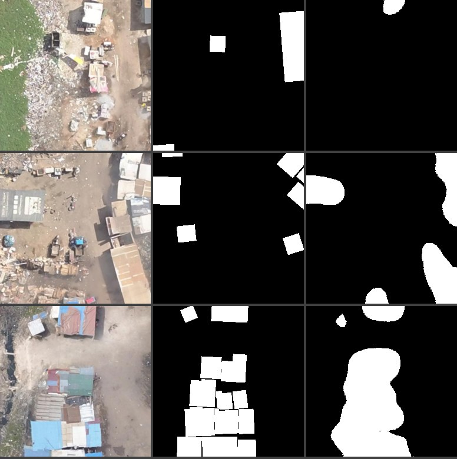
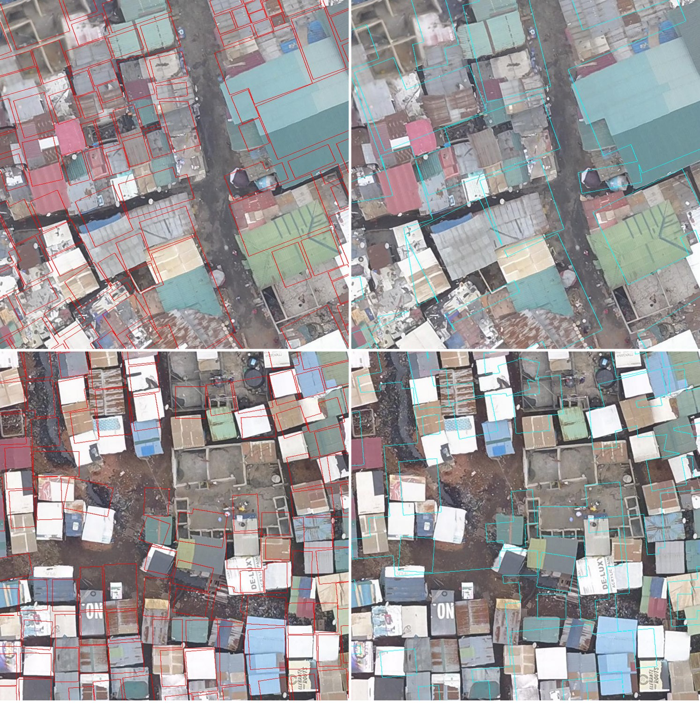
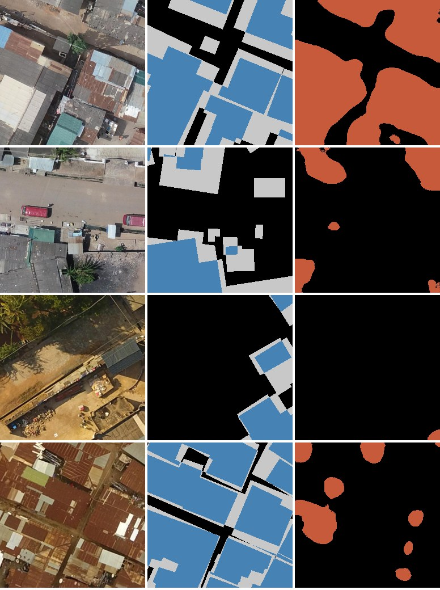
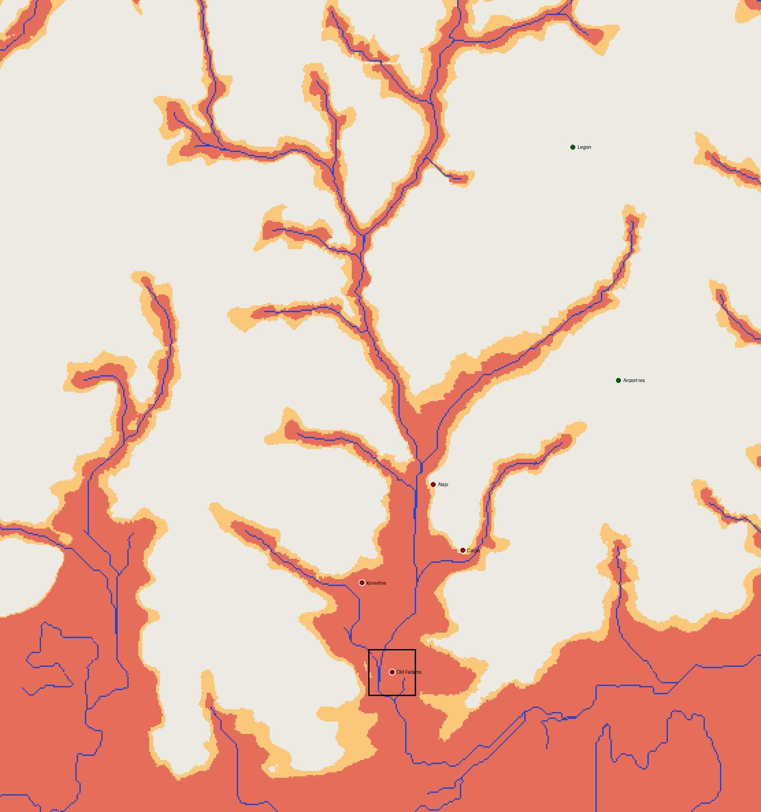
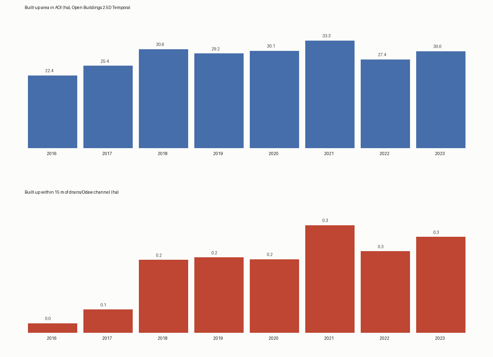
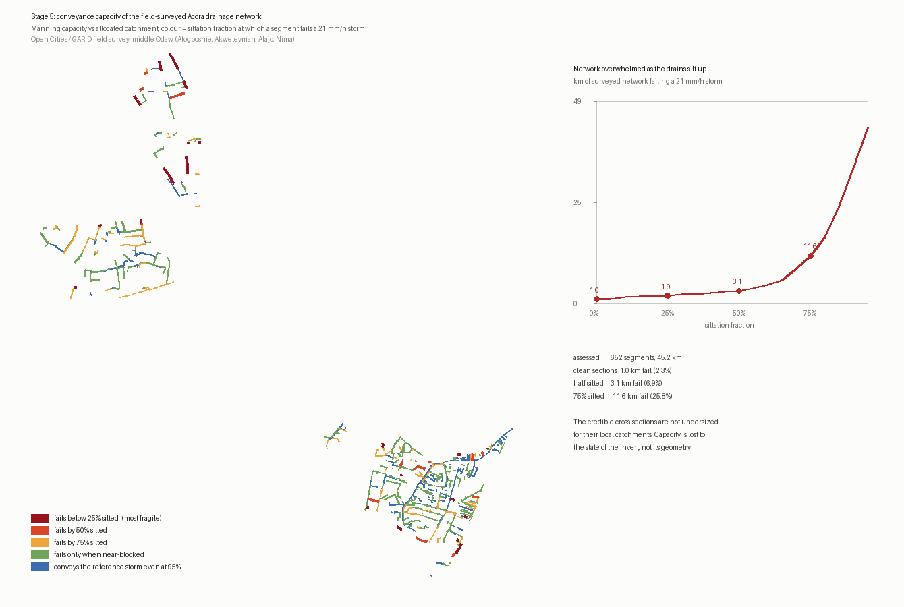

Recurrent inundation in metropolitan Accra is, on the preponderance of the evidence, an anthropogenic rather than a climatological phenomenon: its proximate determinants are the obstruction of drainage by solid waste and the encroachment of structures onto watercourses. These determinants are metre-scale and therefore invisible to the moderate-resolution satellite imagery on which prior work has relied; municipal authorities presently enumerate them by pedestrian survey conducted after floods. This work develops a five-stage, fully reproducible pipeline that couples deep-learning semantic segmentation of centimetre-resolution aerial orthoimagery with terrain hydrology and open-channel hydraulics, using only openly licensed data, across five informal settlements of the Odaw catchment. Four results are reported. First, segmentation accuracy in this setting is bounded by label noise rather than model capacity, and a cross-source consensus verification scheme — trusting only pixels on which two independent footprint sources agree, and excluding disputed pixels from loss and metric alike — raises the honest score from 0.58 to 0.80 IoU while revealing that the incumbent model had never been deficient, only mis-benchmarked. Second, height above nearest drainage separates flood-reported localities from elevated controls at p = 0.0074 in a basin for which no flood extent has ever been published. Third, Manning conveyance analysis of 652 field-surveyed drain cross-sections finds the network is not undersized — 2.3% fails a conservative reference storm when clean — but that siltation to three-quarters depth multiplies the failing length elevenfold to 25.8%, relocating the hazard from construction to maintenance. Fourth, cross-site degradation of the segmentation model is shown by leave-one-site-out testing to be a limitation of corpus coverage rather than a ceiling, recovering a mean of +0.287 IoU on unseen settlements. Four negative results are documented alongside, including the finding that reanalysis rainfall cannot supply a design storm for Accra.
The hydrological dysfunction of Accra is not principally a deficit of precipitation forecasting but a deficit of spatial intelligence. On 3 June 2015 a storm over the Odaw catchment killed approximately 150 people, most of them at a fuel station at Kwame Nkrumah Circle; the proximate cause identified in subsequent reporting was not the rainfall total but the failure of a drainage network choked with municipal refuse. That diagnosis has been repeated after every major event since, and the remedial instrument has remained constant: teams walk the drains after the water recedes and record what they find.
The central hypothesis of this work is that such enumeration can be performed a priori, automatically, and at scale, by interrogating sub-decimetre aerial imagery with a combination of semantic segmentation, terrain hydrology, and topology-aware geospatial reasoning. The hypothesis is attractive precisely because the causal mechanisms are small. A drain 0.5 m wide, half-filled with refuse, is a decisive hydraulic object and an entirely invisible one at the 30 m ground sampling distance of Landsat. It is legible at 5 cm.
Two constraints shaped the work throughout. The first is that no proprietary data were used: every input is openly licensed and every product is regenerated by a scripted acquisition step, because a method that depends on data the responsible agency cannot obtain is not a method it can adopt. The second is that negative results are reported as prominently as positive ones. Four substantive lines of enquiry failed during this project, and each failure constrains what a successor should attempt; they are given their own section rather than being omitted.
The Odaw River drains a catchment of approximately 400 km² from the Akwapim foothills to the Korle Lagoon and thence to the Gulf of Guinea. Its lower reaches traverse the densest and most flood-exposed districts of metropolitan Accra. Five settlements within the catchment constitute the areas of interest.
Old Fadama / Agbogbloshie occupies the confluence of the terminal reach of the Odaw and the Korle Lagoon. As the hydraulic sink of the entire catchment it concentrates, within a tract of roughly 1.8 × 2.6 km, every mechanism under investigation: progressive colonisation of former wetland, dense riparian and on-drain construction, and chronic occlusion of the sea-outfall culverts. It was adopted as the pilot because it is the only site in Ghana with openly published drone orthomosaics at two epochs (2020 and 2024), permitting change detection.
Alogboshie, Akweteyman, Alajo and Nima lie upstream in the middle Odaw. They were added for two reasons. Their morphology differs materially from the lagoon-mouth fabric of Old Fadama, which makes them a genuine test of whether a model fitted at the outlet has learned anything transferable. And they are precisely the communities whose drains were surveyed segment-by-segment during the 2018–2020 Open Cities Africa and GARID field campaigns, making them the only places in the country where measured drain cross-sections and centimetre imagery coincide.
All inputs are openly licensed. Raster payloads are excluded from version control and regenerated deterministically by the acquisition scripts.
| Asset | Source | Licence | Specification |
|---|---|---|---|
| Orthomosaics (5 sites) | OpenAerialMap / Open Cities Africa | CC-BY 4.0 | 2.0–5.2 cm GSD, RGB |
| Building footprints | OpenStreetMap | ODbL | 25,286 polygons (pilot AOI) |
| Building footprints | Google Open Buildings v3 | CC-BY 4.0 | ~50 cm satellite-derived |
| Drain cross-sections | Open Cities / GARID field survey, via OSM | ODbL | 2,107 ways; 760 with width and depth |
| Bare-earth terrain | FABDEM V1-2 | CC-BY-NC-SA | 30 m, buildings and forest removed |
| Built-up time series | Open Buildings 2.5D Temporal | CC-BY 4.0 | presence, count, height; annual 2016–23 |
| Radar | Sentinel-1 RTC (Planetary Computer) | open | 20 m VV/VH gamma-nought |
| Rainfall | ERA5 hourly (Open-Meteo) | CC-BY 4.0 | ~31 km, 1980–2024 |
A structural observation about the terrain data governs much of what follows. No open product resolves Accra's ground micro-topography. FABDEM at 30 m is the open ceiling; the drone missions published orthomosaics but no surface models; Ghana has no national LiDAR, and the only airborne LiDAR known to exist over the basin is held internally by the GARID programme. Every methodological decision involving elevation in this work is a consequence of that ceiling rather than a preference.
The system is decomposed into loosely coupled stages rather than conceived as a monolithic end-to-end estimator. This is deliberate: the stages have different evidentiary standards, and a failure in one should be diagnosable without retraining the others.
Orthomosaics are tessellated into 512 px tiles at 5 cm and resized to 256 px for a ResNet-34 encoder / U-Net decoder network4,8, supervised by rasterised building footprints. The pilot corpus comprises 1,081 tiles over a 1,024 m window.
The central methodological problem emerged early: validation IoU plateaued near 0.58 while training loss continued to fall, and stronger recipes made it worse. Diagnosis established that the constraint was the supervision, not the network. OpenStreetMap footprints in dense informal fabric are offset by one to two metres and merge adjacent structures; Google Open Buildings9 draws cleaner individual shapes but under-detects in the densest blocks. Rasterised onto an identical grid, the two sources agree at only IoU 0.611 — the empirical noise floor of the labels.
The resolution adopted here is consensus verification. Where the two independent sources agree, whether on building or on background, the label is trusted. Where they disagree — 23% of pixels — the pixel is marked ignore and excluded from the loss and from the metric alike. This is not label fusion: no attempt is made to adjudicate the disputed pixels. It is an admission that the project does not know their true value, encoded so that neither training nor evaluation pretends otherwise.
Height above nearest drainage (HAND)7 is derived over the full catchment with WhiteboxTools6: least-cost depression breaching, D8 flow accumulation, stream extraction at a 2.7 km² support threshold, then normalisation of elevation to the nearest stream cell. FABDEM is used rather than raw Copernicus GLO-30 because over dense urban fabric the raw surface embeds roof heights and corrupts flow routing3.
Encroachment is adjudicated deterministically, without a learned model, as the intersection of building footprints with buffers about mapped drain centrelines and water polygons. Because any such tally is a monotone function of the chosen tolerance, a sensitivity sweep is reported rather than a single figure. Multi-temporal built-up trend is taken from Open Buildings 2.5D Temporal, which supplies eight consistent annual epochs from a single model — replacing a two-epoch drone difference that proved dominated by inter-flight prediction flicker.
For each surveyed drain segment, full-section conveyance is computed by the Manning equation1, Q = (1/n) A R2/3 S1/2, with cross-sectional area and hydraulic radius derived from the surveyed profile (rectangular, trapezoidal, elliptical, or rectangular-with-rounded-invert), and roughness from surveyed material and invert smoothness.
Two departures from textbook practice were forced by the data and are material to the result. First, no design storm is used. Section 6 documents why reanalysis rainfall cannot supply one for Accra; instead the rational method is inverted to solve for each segment's critical intensity, icrit = Qcap · 3.6×106 / (C A), the rainfall rate at which that drain reaches capacity. This is a property of the drain and its catchment alone, requiring no rainfall input and no return period, and it renders the resulting ranking invariant to the missing intensity–duration–frequency relation. Second, contributing area is accumulated on the drain network itself rather than routed over the DEM, because a 30 m surface cannot determine which side of a street drains to which gutter. Each 10 m cell is allocated to its nearest drain by chamfer propagation, and local catchments are accumulated downstream through the network graph, reconstructed from OSM endpoints snapped at 3 m and oriented by a 300 m-smoothed elevation field.
Longitudinal grade is measured across a 300 m chord and clamped to the range urban drains are laid to (0.1–2%); the DEM places a segment within that range but is never permitted to assert a grade outside it. Since grade enters as S1/2, the ranking is invariant to the choice and only absolute counts shift.
Generalisation is measured by leave-one-site-out: a site is withheld entirely, the model is fine-tuned on the remaining four, and the withheld site is scored under the identical verified-pixel metric. Withholding whole sites rather than random tiles is what makes this a test of transfer rather than of interpolation — tiles drawn from a single 512 m window are far too spatially correlated for a random split to say anything about a new settlement.
On an identical 1,081-tile split, a pretrained ResNet-34 encoder outperformed a from-scratch U-Net, 0.579 against 0.530 validation IoU. Attempts to improve on that by optimisation were uniformly unsuccessful: native-resolution multi-scale crops, photometric jitter, differential encoder/decoder learning rates and an AdamW warmup-cosine schedule over a 60-epoch budget scored below the baseline, at 0.561 and 0.566. The added capacity was memorising label noise. A global-shift registration search over the OSM mask peaked at 0.2 m, establishing that the label error is per-building and random rather than a correctable systematic offset. The one genuine post-hoc gain was inference-time: four-way flip test-time augmentation with a calibrated threshold lifted the baseline to 0.593 at zero training cost.
Consensus verification changed the picture qualitatively rather than incrementally.
Scored on verified pixels only, the existing transfer-learning model achieves pooled IoU 0.77. Most of its apparent error had been disagreement with label noise, not with reality. Retraining with disputed pixels masked out of the loss yields a further genuine gain to 0.80 pooled (0.70 per-tile), and the resulting model correctly rejects OSM's phantom buildings on open ground — for which its legacy score against raw OSM masks falls to 0.55.
That last detail is worth dwelling on, because it is the strongest evidence that the metric rather than the model had been at fault. A model that improves on reality while scoring worse against the labels is a model whose labels are wrong. Reporting the legacy figure alone would have registered the improvement as a regression.


Applied zero-shot to the four upstream communities, the pilot checkpoint degrades substantially: pooled verified IoU falls from 0.798 to 0.523. The interpretation of that fall depends entirely on a quantity that is easy to omit — the label-noise floor at the new sites, which moves only from 0.611 to 0.578. Because the score moves an order of magnitude further than the floor, the loss is attributable to the model rather than to worse supervision upstream. A control run scoring the pilot's own validation split through the identical code path recovered 0.798 against the 0.80 published from the original training, confirming that the transfer number measures transfer and not a pipeline defect.
One site, Alogboshie, degraded far beyond the others, to 0.298, under-segmenting by more than threefold. A preprocessing explanation was the obvious suspect and was tested rather than assumed: it is the finest source at 2.01 cm and must be reduced 2.49× to reach the training resolution, where the other three are reduced by 1.55×, 1.39× and 1.04×, and bilinear resampling under-filters beyond a factor of two. Re-fetching with area-average resampling moved the score from 0.297 to 0.298. The hypothesis is refuted; the difficulty is a real domain difference.
Leave-one-site-out then established that the gap is learnable.
| Held-out site | Tiles | Before | After | Change | Held-in |
|---|---|---|---|---|---|
| Alogboshie | 377 | 0.298 | 0.616 | +0.318 | 0.885 |
| Nima | 400 | 0.507 | 0.863 | +0.355 | 0.866 |
| Alajo | 398 | 0.603 | 0.833 | +0.231 | 0.888 |
| Akweteyman | 400 | 0.641 | 0.883 | +0.242 | 0.881 |
| Old Fadama † | 1,081 | 0.904 | 0.681 | — | 0.912 |
† Not comparable. The starting checkpoint was fitted on 80% of these tiles, so the "before" figure is a training-set score and the apparent decline is contamination rather than regression. The interpretable quantity in that fold is the 0.681 which four upstream communities alone generalise to Old Fadama, having never seen it.
Every genuinely unseen site improves, by between 0.231 and 0.355 for a mean of +0.287, without the model ever seeing a tile from the site on which it is scored. Held-in performance remains between 0.866 and 0.912 throughout, so none of the gain is bought by forgetting. A production checkpoint fitted on all 2,656 verified tiles scores 0.880 pooled on its validation split, distributed evenly across sites (0.862 to 0.912); that figure measures fit rather than generalisation and the leave-one-site-out result remains the honest expectation for a settlement outside the corpus.
Alogboshie is the informative case, and its trajectory states the argument in a single site: 0.298 unseen, 0.616 held out with four siblings present, 0.868 represented in training. Its difficulty was never intractable — only unrepresented.

No agency has published a flood extent for any Odaw event: UNOSAT's only Ghana product covers the October 2023 lower-Volta event, verified here to lie outside the basin; the 2015 event is absent from the Global Flood Database; Copernicus EMS was never activated. Validation therefore proceeds on primary data.
Every Odaw-basin locality named in multi-year flood reporting — Old Fadama, Circle, Odawna, Adabraka, Kaneshie, Nima, Alajo, Abeka Lapaz — was compared against eight elevated control districts absent from that reporting, geocoded independently via OSM Nominatim. Median HAND is 1.9 m against 23.0 m, AUC 0.86, exact one-sided Mann–Whitney p = 0.0074. The two flooded localities that sampled high are centroid artefacts — Nima and Lapaz geocode to ridge tops above their valley frontage — and were retained precisely because they bias against the hypothesis.
The integrated exposure product yields a flat and uncomfortable statement: the entire 37.7 ha of model-delineated built-up Old Fadama lies below 2 m HAND, at a mean of 0.03 m. Within-AOI hazard gradation is physically absent rather than merely unresolved, and no finer classification should be manufactured to suggest otherwise.

The deterministic overlay adjudicates two modalities of encroachment within the 2020 epoch: on-drain construction and riparian construction. At a 5 m tolerance 114 structures intersect a mapped drain or canal; the union of drain-5 m and water-10 m criteria gives 273 structures. No structure lies within a mapped water polygon, an internal consistency check on the geometry.
The multi-temporal series supplies the trajectory. Built-up area within the AOI grew from 22.4 to 33.3 ha between 2016 and 2021, contracted to 27.4 ha in 2022, and rebounded to 30.0 ha by 2023; built-up area within a 15 m riparian buffer grew tenfold, from 0.03 to 0.31 ha. The contraction is itself a validation of the source: the epochs are dated 30 June, and the police-backed Agbogbloshie clearance began 1 July 2021, so the series falls in exactly the epoch it must and recovers as documented reoccupation proceeded. Mean structure height holds at 5–6 m throughout, confirming minimal vertical refuge.

Two data findings preceded any hydraulic result and materially changed it. First, 108 surveyed segments carry widths of 4–20 cm — median 6 cm — against depths of 0.2–0.7 m, aspect ratios reaching 13:1. These are not street drains but unit or entry errors in the field campaign, and left in they supplied 91 of the 107 apparently critical segments and dominated the ranking entirely. They are flagged in the published output and held out of the headline statistics rather than silently discarded. Second, the surveyed network is topologically fragmented — 484 connected components before endpoint snapping, 293 of them isolated single ways — so accumulated catchments remain local, at a median of 0.64 ha, and no trunk conveyance is represented.
On the 652 segments (45.2 km) with credible geometry, the result inverts the expected finding.
| Invert condition | Segments failing | Length | Share of network |
|---|---|---|---|
| Clean section | 16 | 1.0 km | 2.3% |
| 25% silted | 27 | 1.9 km | 4.1% |
| 50% silted | 46 | 3.1 km | 6.9% |
| 75% silted | 146 | 11.6 km | 25.8% |
At full section the median segment conveys 0.61 m³/s against a median catchment of 0.64 ha and tolerates 309 mm/h — an intensity no Accra storm approaches. Capacity is lost to the state of the invert, not to its geometry. Siltation to three-quarters depth multiplies the failing length elevenfold; the median segment fails once 85% silted, and the most fragile fifth at 36%.
The policy reading is direct and runs against intuition. The instinctive response to a flooded city is to build larger drains; on this evidence the drains that exist are adequate for their local catchments when clean, and the binding constraint is refuse. That relocates the intervention from capital works to maintenance — and, critically for this project, from a quantity that must be designed to one that can be observed from the air.

Four lines of enquiry failed. Each is reported because it constrains what a successor should attempt.
Reanalysis rainfall cannot supply a design storm for Accra. A Gumbel relation fitted to 45 years of ERA5 hourly precipitation5 is internally well-behaved and reproduces the city's annual total of roughly 900 mm. It is nonetheless unusable: on every documented flood day the reanalysis returns a depth below every annual maximum in the record, rendering the lethal 3 June 2015 storm as a 5.1 mm/h, 10.8 mm/24 h day. Six sample points spanning the metropolis return byte-identical series, confirming that this is grid resolution and not storm displacement — one ~31 km cell covers the city, and coastal Accra's convective rainfall lies beneath it. This finding forced the inversion of the hydraulic model described in §4.4, and is the reason no absolute return-period statement appears in this work.
Open-water SAR is physically blind in this floodplain. Sentinel-1 RTC scenes were processed for the 18 June 2018 and 9 June 2020 events against dry-season reference stacks. The detector is demonstrably sound — it maps 121 ha of water change on 9 June 2020 at 99.5% below 2 m HAND, AUC 0.95 — but that signal is dominated by the Panbros salt-pan cycle, which serves as a positive control. Inside the Odaw floodplain it detects almost nothing: the surface is near-continuously roofed, and flooded streets raise VV backscatter through double-bounce rather than darkening it.
The complementary urban double-bounce channel is equally null. Across all 29 June acquisitions from 2015 to 2024, the single same-evening flood acquisition ranks fifth on floodplain backscatter anomaly (p = 0.17), and the anomaly does not correlate with pre-pass rainfall (Spearman ρ = −0.02). At 20 m VV gamma-nought there is no usable flood signal here by either mechanism.
Stronger training recipes degrade accuracy under label noise. Documented in §5.1: aggressive augmentation and extended optimisation schedules scored below a plain baseline, because the additional capacity was spent memorising label error. On label-noisy corpora the productive intervention is on the supervision, not the recipe.
A fifth hypothesis, that Alogboshie's transfer failure was a resampling artefact, was tested and refuted in §5.2. It is recorded here because the temptation to accept it was considerable: the resampling factors ranked the four sites in exactly their score order, which is precisely the kind of coincidence that survives casual scrutiny.
The two findings with the widest applicability are methodological rather than geographic.
The first is consensus verification. Its premise is that when two independent label sources disagree, the honest response is neither to pick one nor to average them but to decline to score the disagreement. The gain here was substantial — from an apparent 0.58 to a measured 0.80 — but the more consequential effect was diagnostic: it revealed that a model believed to be mediocre had been performing well against a benchmark that was wrong. The conditions for applying it are common. OpenStreetMap and Open Buildings jointly cover most of the Global South, they fail in different and largely uncorrelated ways, and any project training a segmentation model on either alone is measuring its model against those failures.
The second is the discipline of reporting a label-noise floor beside every score. A drop in IoU on a new site is uninterpretable in isolation: it may indicate a model that failed to transfer, or supervision that is simply worse there. This project made the corresponding error once in the opposite direction, briefly reading a legacy score of 0.55 as a regression when it was evidence of improvement, and the protocol adopted thereafter — report the floor with the score, always — is what made the cross-site result legible.
The domain finding of §5.5 carries the clearest operational implication. If the surveyed drains are adequate when clean, then the quantity that determines whether a neighbourhood floods is one that changes on the timescale of a wet season, is invisible to any cross-section survey, and is in principle observable from overhead imagery. That is a considerably more tractable target than the capital programme the intuitive diagnosis implies, and it is the point at which the two halves of this work — the segmentation and the hydraulics — converge on a single measurement.
The pipeline is implemented as twenty-nine numbered scripts executed in sequence, each performing one acquisition or analysis step and each documenting its own rationale, including the steps that failed. Large rasters are excluded from version control and regenerated by the acquisition scripts; the repository versions the methodology rather than the payload. Remote cloud-optimised imagery is read by windowed range request rather than bulk download, so reconstructing the five-site corpus transfers roughly 1% of the 2.5 GB the scenes nominally occupy. All analysis outputs are published as CSV and GeoPackage alongside the figures reproduced here.
Centimetre-resolution aerial imagery, combined exclusively with openly licensed ancillary data, is sufficient to localise and quantify the anthropogenic drivers of flooding in the Odaw basin: to delineate the built fabric at 0.80 verified IoU and to generalise that delineation across settlements it has not seen, to rank hydrological hazard against an independently significant terrain criterion, to enumerate encroachment on the drainage network and measure its decadal growth, and to establish by hydraulic analysis that the network's deficiency is one of maintenance rather than of capacity. The principal residual gap is the direct observation of drain obstruction, for which the imagery, the surveyed network, and a segmentation model validated across five sites are now all in place over the same ground.
Source code released under the MIT Licence. Derived data inherit the upstream licences enumerated in Table 1. Imagery courtesy of OpenAerialMap contributors and the Open Cities Africa programme; drain survey attributes courtesy of the Open Cities Accra / GARID field campaigns via OpenStreetMap contributors.